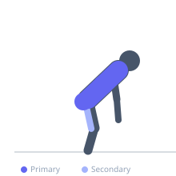
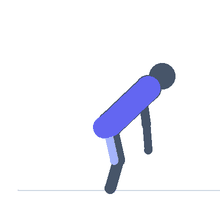

Exercise guide / Rack Pull Above Knee
Rack Pull Above Knee
The above-knee rack pull sets the starting pin height just above the knee, leaving only the final hip-extension lockout portion of the deadlift. This shortened range of motion allows for supramaximal loading and directly trains the lockout mechanics, upper back, and trapezius under heavier loads than a full deadlift allows. It is used by powerlifters to reinforce lockout strength and by athletes to build upper back and grip capacity.
Primary muscles
erector spinae
gluteus maximus
trapezius upper
Secondary muscles
hamstrings
latissimus dorsi
Stabilizers
flexor carpi radialis
transverse abdominis
Equipment
Standard Barbell
Power Rack (Squat Cage)
Optional
Lifting Straps


Starting position
- Set the safety pins of a power rack just above knee height. Load the bar on the pins. Grip the bar in the same position as a conventional deadlift. The torso will be nearly vertical due to the high starting position.
Setup
- Because of the short range of motion, loads can be significantly higher than conventional deadlift — often 110-130%. Lifting straps are commonly used.
Steps
- Step 1: Position yourself behind the bar with pins set just above knee height.
- Step 2: Grip the bar with a double-overhand or mixed grip, brace the core.
- Step 3: Drive the hips forward in a hip-extension motion, pulling the bar to lockout.
- Step 4: Squeeze the glutes and stand fully erect at the top.
- Step 5: Return the bar to the pins under control.
Coaching cues
- Take up the slack — don't yank off the pins
- Drive the hips forward to lock out
- Squeeze everything at the top
Breathing
- Brace before each rep. Exhale at lockout.
Range of motion
- Short range — from just above the knee to full lockout only.
Tempo
- 1-1-2-0
Common mistakes
- Jerking the bar off the pins — set the tension first, then pull
- Not achieving full lockout at the top
- Hyperextending the lower back at lockout — the goal is hip extension, not lumbar hyperextension
Safety
- High loads place significant demand on the grip and upper back — do not neglect warmup sets
- Ensure pins are level and secure before loading
Training
- strength: 1–5 reps
- strength: 3–5 sets
- Rest: {'strength': 240}